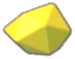

Workshop equipment · #28
View
Restaurant · dock
Restaurant · Edit inventory tabs
Workshop
Workshop · not enough salvage
Workshop · MAX
Dive · equipment in play
Shared components
Screen
Fill window
9:16
9:19.5
9:21
2:3
3:4 tablet
Reset
+100
